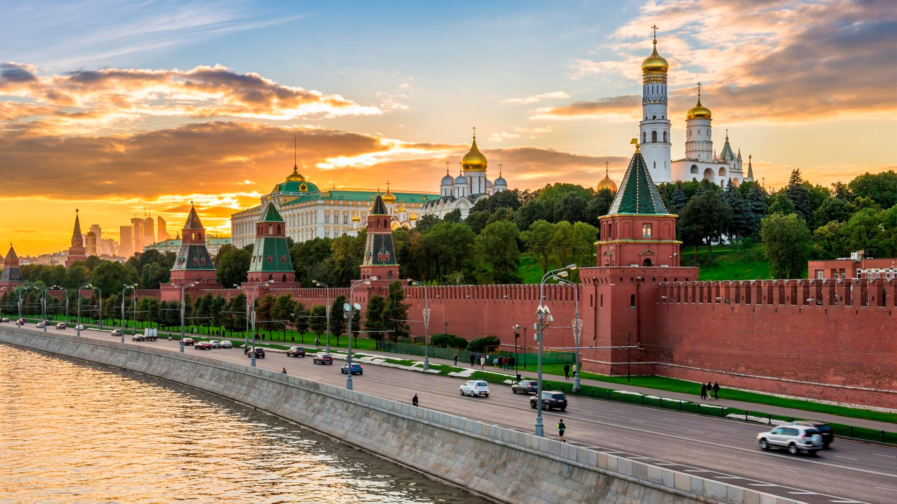

Климат Москвы — умеренно континентальный, с чётко выраженной сезонностью. Зима (период со среднесуточной температурой ниже 0 °C) в среднем длится около 4 месяцев, со второй декады ноября (10 ноября) до второй декады марта (20 марта). Дневная температура устойчиво возвращается к положительным значениям 5 марта. В период календарной зимы могут отмечаться непродолжительные (3—5 дней) периоды сильных морозов (с ночной температурой до −20 °C, редко до −25..−30 °C). При этом в декабре и начале января часты оттепели, когда температура с −5..−10 °C поднимается до 0 °C и выше, иногда достигая значений в +5..+9 °C. По данным метеостанции ВДНХ (за период 1981—2010 годов), самым холодным месяцем года является февраль (его средняя температура составляет −6,7 °C[25]). Весенние сезоны по продолжительности варьируются год от года и могут составлять от 1 до 3 месяцев. Иногда практически летние температуры регистрируются в начале апреля, в то же время в конце мая — начале июня случаются возвраты холодов. Лето (период с дневной температурой выше +20 °C и среднесуточной выше +15 °C) длится около 3,5 месяцев, с третьей декады мая (23 мая) до конца августа (29 августа), дневная температура нередко достигает 30-градусной отметки (в среднем 6—8 дней за сезон, в 2010 году — непрерывно 1,5 месяца). 35-градусная отметка за последние 30 лет достигалась 18 раз, из них 16 — в 2010 году. Самым тёплым месяцем является июль (его средняя температура за период 1981—2010 годов составляет +19,2 °C). Осень в Москве затяжная, наступает с началом сентября, заканчивается в середине ноября — начале декабря, когда среднесуточная температура становится устойчиво ниже 0 °C. Нередко температура после начала метеорологической зимы возвращается к положительным значениям, полностью сходит снежный покров. Среднегодовая температура в городе по наблюдениям 1981—2010 годов составляет +5,8 °C. Самым тёплым за всю историю метеонаблюдений в столице стал 2019 год — среднегодовая температура составила +7,8 °C, средний суточный максимум: +11,5 °C (при этом средние положительные температуры по месяцам зафиксированы в том числе и в марте, ноябре и декабре)[26]. Ранее самым тёплым был 2015 год — тогда средняя температура составила +7,4 °C[26]. Самым холодным в столице остаётся 1888 год (+1,7 °C)[26]. По наблюдениям 1961—1990 годов, среднегодовая температура составляла +5,0 °C. Среднегодовая скорость ветра — 2,3 м/с. Среднегодовая влажность воздуха — 77 %, в декабре достигает 85 %, в мае опускается до 64 %[27]. Самая высокая температура воздуха за 130-летний период наблюдений была отмечена 29 июля 2010 года и составила +38,2 °C на метеостанции ВДНХ, +39,0 °C на метеостанции «Балчуг» в центре города и в аэропорту Домодедово в период аномальной жары[28]. Самая низкая температура была зарегистрирована 17 января 1940 года и составила −42,2 °C (метеостанция ТСХА), на опорной метеостанции Москвы — ВДНХ — абсолютный минимум составил −38,1 °C (январь 1956 года)[29]. За год в Москве и прилегающей к ней территории выпадает 600—800 мм атмосферных осадков, из них большая часть приходится на летний период. Уровень осадков изменяется в достаточно большом диапазоне, и возможно как их большое количество (например, в июле 2008 года — 180 мм осадков[30]), так и малое (например: в июле 2010 года выпало всего 13 мм осадков). Продолжительность светового дня колеблется от 7 часов 00 минут 21 декабря до 17 часов 34 минут 21 июня. Максимальная высота солнца над горизонтом — от 11° 21 декабря до 58° 21 июня.
Крепость в центре столицы имеет огромное историко-художественное и общественно-политическое значение. Первые сооружения из дерева здесь появились в 1264 году, когда на этой территории московские удельные князья построили свою резиденцию. Кремль, каким мы его знаем сейчас, начал формироваться во времена правления Ивана III, когда царь решил возвести на Боровицком холме масштабное фортификационное сооружение. Правитель нанял самых известных зодчих из Милана, и они в полной мере оправдали репутацию лучших строителей Европы.
Экскурсия Москвы